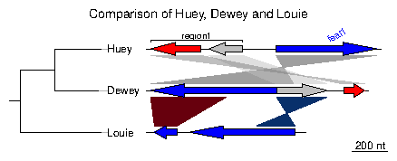
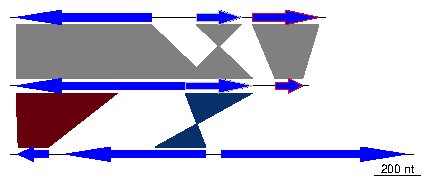
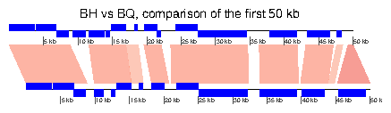
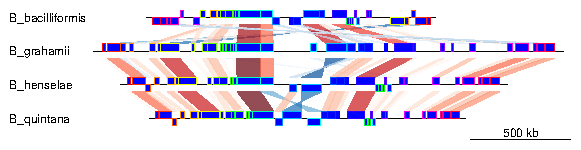
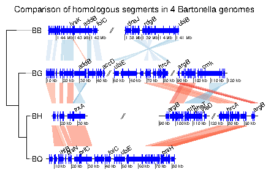
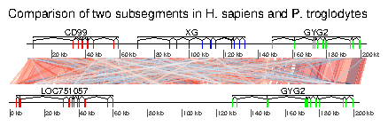
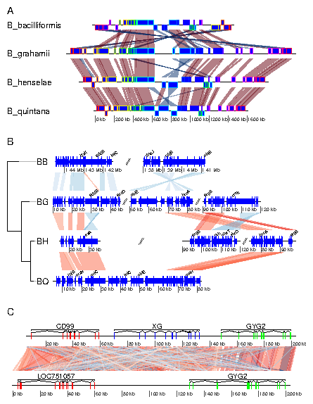

Getting started with genoPlotR
Lionel Guy
Introduction
The genoPlotR package is intended to produce publication-grade graphics
of gene and genome maps. With the amazing speed of data production of new
DNA sequencing techniques and the increase in the number of software
available to compare these sequences, there is a great need to graphically
represent these sequences and their comparisons. A number of packages
already exist (Artemis, ACT, mauve), but none of them produces easily
reproducible, publication-grade graphics. The goal of this package is
to fill in that gap.
This document provides an introduction to genoPlotR, providing the user
with examples of increasing complexity. It is not meant as a comprehensive
guide otto all the functions and options of the package, but rather as
a first approach to the package.
To load the library in a R session, type:
> library(genoPlotR)
1 Quick start
Loading the simplest dataset, applying a color scheme and some limits to the
plotting aread, adding a tree and some annotations. For more details about
that plot, refer to the first of the examples developed below.
> data(three_genes)
> comparisons[[1]]$col <- apply_color_scheme(c(0.6, 0.4, 0.5),
+ "grey")
> names <- c("Huey", "Dewey", "Louie")
> names(dna_segs) <- names
> tree <- newick2phylog("(((Huey:4.2,Dewey:3.9):3.1,Louie:7.3):1);")
> mid_pos <- middle(dna_segs[[1]])
> xlims <- list(c(Inf, -Inf), c(-Inf, Inf), c(1850, 2800))
> annot <- annotation(x1 = c(mid_pos[1], dna_segs[[1]]$end[2]),
+ x2 = c(NA, dna_segs[[1]]$end[3]), text = c(dna_segs[[1]]$name[1],
+ "region1"), rot = c(30, 0), col = c("blue", "black"))
Now plotting these three segments:
> plot_gene_map(dna_segs = dna_segs, comparisons = comparisons,
+ annotations = annot, annotation_height = 1.3, tree = tree,
+ tree_width = 2, xlims = xlims, main = "Comparison of Huey, Dewey and Louie
")

2 Getting help
There are various ways to get help with genoPlotR. First, you can start
the general help in a web browser, and then click on "packages" and
find genoPlotR in the list. It will provide a list of the functions
available. The first link in the list leads to a very general description of
the package.
> help.start()
Another way of obtaining the list of functions present in the package is to run
> library(help = genoPlotR)
A lot of examples and help are available in the main functions, i.e. the
reading functions (the various read_dna_seg_from* and
read_comparison_from* functions) and the main plotting
function, plot_gene_map.
> help("read_functions")
> help("plot_gene_map")
Finally, the web page on R-forge (http://genoplotr.r-forge.r-project.org/)
provides ways to get in touch with the genoPlotR community and to submit
bugs and feature requests.
3 Objects in genoPlotR
This section will give an overview of the different types of R objects in
genoPlotR.
3.1 dna_seg
A dna_seg object is a collection of genes or elements along a
genome, to be represented on a map.
dna_seg objects need to have 4 columns, name, start,
end and strand. Extra columns with names col,
lty, lwd, pch, cex, gene_type will
be used in the plotting process. Other extra columns will be kept in
the object, but not used.
> names1 <- c("feat1", "feat2", "feat3")
> starts1 <- c(2, 1000, 1050)
> ends1 <- c(600, 800, 1345)
> strands1 <- c("-", -1, 1)
> cols1 <- c("blue", "grey", "red")
> df1 <- data.frame(name = names1, start = starts1, end = ends1,
+ strand = strands1, col = cols1)
> dna_seg1 <- dna_seg(df1)
> str(dna_seg1)
Classes ‘dna_seg’ and 'data.frame': 3 obs. of 10 variables:
$ name : chr "feat1" "feat2" "feat3"
$ start : num 2 1000 1050
$ end : num 600 800 1345
$ strand : num -1 -1 1
$ col : chr "blue" "grey" "red"
$ lty : num 1 1 1
$ lwd : num 1 1 1
$ pch : num 8 8 8
$ cex : num 1 1 1
$ gene_type: chr "arrows" "arrows" "arrows"
3.2 comparison
A comparison is a collection of similarities, representing the
comparison between two DNA segments.
Objects (either data frames or lists) should have at least named
elements start1, end1, start2 and end2.
In addition, it can use a color column, that will give
the color of each comparison. Additional numeric columns can be used
for automatic color-coding (via apply_color_scheme.
> starts1 <- c(2, 1000, 1050)
> ends1 <- c(600, 800, 1345)
> starts2 <- c(50, 800, 1200)
> ends2 <- c(900, 1100, 1322)
> comparison1 <- as.comparison(data.frame(start1 = starts1, end1 = ends1,
+ start2 = starts2, end2 = ends2))
> str(comparison1)
Classes ‘comparison’ and 'data.frame': 3 obs. of 5 variables:
$ start1 : num 2 1000 1050
$ end1 : num 600 800 1345
$ start2 : num 50 800 1200
$ end2 : num 900 1100 1322
$ direction: num 1 -1 1
3.3 annotation
An annotation object is used to annotate a DNA segment. It has
labels attached to positions. Each label can be attached to a single
position or to a range.
> mid_pos <- middle(dna_segs[[1]])
> annot1 <- annotation(x1 = mid_pos, text = dna_segs[[1]]$name)
> str(annot1)
Classes ‘annotation’ and 'data.frame': 3 obs. of 5 variables:
$ x1 : num 301 900 1198
$ x2 : logi NA NA NA
$ text : chr "feat1" "feat2" "feat3"
$ color: chr "black" "black" "black"
$ rot : num 0 0 0
A tree description in Newick format can ba parsed using ade4 package.
> tree <- newick2phylog("(((A_aaa:4.2,B_bbb:3.9):3.1,C_ccc:7.3):1);")
> str(tree$leaves)
Named num [1:3] 4.2 3.9 7.3
- attr(*, "names")= chr [1:3] "A_aaa" "B_bbb" "C_ccc"
4 Reading data
4.1 DNA segments
Several formats can be read by genoPlotR to produce dna_seg objects:
- EMBL files (read_dna_seg_from_embl)
- Genbank files (read_dna_seg_from_genbank)
- PTT (protein table) files, tabular versions of Genbank
files)(read_dna_seg_from_ptt)
- User generated tabular files (read_dna_seg_from_ptt)
The function read_dna_seg_from_file is a wrapper function, that
will attempt to guess the correct format of the file.
The first three files are common biological formats and can be downloaded
from major databases, such as the NCBI (http://www.ncbi.nlm.nih.gov/)
and the EMBL (http://www.ebi.ac.uk/embl/Access/index.html). The
definition of EMBL and Genbank files can be found at
http://www.ebi.ac.uk/embl/Documentation/FT_definitions/feature_table.html.
4.2 Comparisons
genoPlotR can read tabular files, either user-generated tab files
(read_comparison_from_tab), or from BLAST output
(read_comparison_from_blast). To produce files that are readable by
genoPlotR, the -m 8 or 9 option should be used in
blastall, or -outfmt 6 or 7 with the BLAST+ suite.
4.3 Mauve output
The backbone output of the Mauve genome aligner
(http://asap.ahabs.wisc.edu/mauve/index.php) can be parsed using
read_comparison_from_blast1.
The function will return a list consisting of a list of dna_segs
and the corresponding comparisons.
5 Plotting data
There is only one plotting function in genoPlotR, plot_gene_map.
Many arguments are available, but here is a list of the most important. Check
the documentation for a more thorough description.
dna_segs A list of DNA segment objects.
comparisons A list of comparisons. Should containt one element
less than the previous.
tree An eventual phylogenetic tree to be plotted at the
left of the figure.
annotations An annotation object, or a list of annotations.
Will display annotations to the first, or to all DNA segments, respectively.
xlims A list of even-numbered numeric vectors, giving the
borders of sub-segments to be plotted. The vector c(1,5000,8000,6000)
will display two sub-segments (1 to 5000 and 6000 to 8000), the second
being in reverse orientation.
main A title to the plot.
scale Should a scale be displayed at the bottom right of the
plot?
dna_seg_scale Allows to control the addition of scales
to each segments. If simply TRUE, will display a scale on each
segment. If a vector, a scale will be displayed for the corresponding
TRUE element.
global_color_scheme Allows to recalculate the colors of
the comparisons, to have colors corresponding to the same scale for all
comparisons.
plot_new Turn off to avoid creating a new plot. Escpecially
useful to integrate a genoPlotR plot in a larger figure.
6 Other useful functions
apply_color_scheme Allows to apply a gray scale or shades
of red and blue to a comparison.
middle Useful to get the middle of a gene, especially to
create annotations.
Datasets Type data(package="genoPlotR") to get the full list.
7 Examples
This section gives step-by-step examples, of gradual complexity. The last
one shows how to combine several plots and to annotate already generated
plots.
For all examples, the first step is to load the library.
> library(genoPlotR)
7.1 Example 1: A very simple example
The data used in this example is a dataset included in genoPlotR, but
for the sake of demonstration, it will be recreated from scratch. To retrieve
data from the package, use data(three_genes).
7.1.1 Data generation and a very simple plot
First, three dna_segs are generated, from data frames with columns
name, start, end, strand and col.
> df1 <- data.frame(name = c("feat1", "feat2", "feat3"), start = c(2,
+ 1000, 1050), end = c(600, 800, 1345), strand = c(-1, -1,
+ 1), col = c("blue", "grey", "red"))
> dna_seg1 <- dna_seg(df1)
> df2 <- data.frame(name = c("feat1", "feat2", "feat3"), start = c(50,
+ 800, 1200), end = c(900, 1100, 1322), strand = c(-1, 1, 1),
+ col = c("blue", "grey", "red"))
> dna_seg2 <- dna_seg(df2)
> df3 <- data.frame(name = c("feat1", "feat2", "feat3"), start = c(1899,
+ 2108, 2803), end = c(2034, 2732, 3620), strand = c(-1, -1,
+ 1), col = rep("blue", 3))
> dna_seg3 <- dna_seg(df3)
> dna_segs <- list(dna_seg1, dna_seg2, dna_seg3)
Then, create two comparisons objects from data frames with columns
start1, end1, start2, end2 and col. In the first comparison, the starts
and ends correspond to the genes created above.
> df4 <- data.frame(start1 = dna_seg1$start, end1 = dna_seg1$end,
+ start2 = dna_seg2$start, end2 = dna_seg2$end)
> comparison1 <- comparison(df4)
> df5 <- data.frame(start1 = c(50, 800), end1 = c(500, 1100), start2 = c(1899,
+ 2732), end2 = c(2034, 2508), col = c("#67000D", "#08306B"))
> comparison2 <- comparison(df5)
> comparisons <- list(comparison1, comparison2)
This constitutes all the material required to create a basic plot.
> plot_gene_map(dna_segs = dna_segs, comparisons = comparisons)

7.1.2 A more elaborate plot
Many options can be added to this simple plot. To begin with, the first
comparison will be colored in grey scale, using an arbitrary scale passed
to the function apply_color_scheme.
> comparisons[[1]]$col <- apply_color_scheme(c(0.6, 0.4, 0.5),
+ "grey")
Second, names and a phylogenetic tree are prepared. The function
newick2phylog from the package ade4 is used to prepare an
object suitable for genoPlotR. The elements of the list of
dna_segs must be named and correspond to the labels of the
tree object, to avoid confusion.
> names <- c("Huey", "Dewey", "Louie")
> names(dna_segs) <- names
> tree_HDL <- newick2phylog("(((Huey:4.2,Dewey:3.9):3.1,Louie:7.3):1);")
Third, annotations to the first segment are added. The first gene is annotated
in its middle (thus the use of middle function), while a region
comprising the second and third gene are annotated with a square bracket.
Note the use of a numeric value for x1 and NA for the first
gene, and the use of two numeric values for the second region.
> mid_pos <- middle(dna_segs[[1]])
> annot <- annotation(x1 = c(mid_pos[1], dna_segs[[1]]$end[2]),
+ x2 = c(NA, dna_segs[[1]]$end[3]), text = c(dna_segs[[1]]$name[1],
+ "region1"), rot = c(30, 0), col = c("grey", "black"))
Finally, the plot is drawn, addind a title, allowing 2 inches for the tree
width (instead of the default 20% of the plot), and changing the annotation
space to 1.3 lines (as opposed to 1 by default). The different options can be
checked by removing/adding the different arguments to plot_gene_map.
> plot_gene_map(dna_segs = dna_segs, comparisons = comparisons,
+ annotations = annot, annotation_height = 1.3, tree = tree_HDL,
+ tree_width = 2, main = "Comparison of Huey, Dewey and Louie")
To explore the different options, new windows can be opened by using
x11() or window(), depending on the OS, or saved to files
using for example png() or pdf(). To finish the plot, the
function dev.off() should be called.
The plot can be saved by adding, in front of the call to
plot_gene_map, a call to one of the graphical device functions of
R (e.g. pdf(), png(), jpeg()). To finish the plot,
the function dev.off() should be called.
7.2 Example 2: Generating data online
This section will give an example of how data can be retrieved and generated
online, using the resources available at the NCBI
http://www.ncbi.nlm.nih.gov/. This example was devised on 5/3/2010, and
given the relatively rapid rate of changes in public databases, it is
possible that part or all of this example becomes obsolete. Please contact
the author of this document (lionel.guy@ebc.uu.se) in such a case.
In this example, the genomes of Bartonella henselae
(RefSeq accession NC_005956) and Bartonella quintana (RefSeq
accession NC_005955) will be compared.
7.2.1 Retrieving dna_seg data
To retrieve Genbank files, the Entrez Nucleotide Database can be directly
queried, provided that the accession number is known. In such a case, the
database can be accessed from the home page of NCBI
(http://www.ncbi.nlm.nih.gov/), by entering the accession number
(e.g. NC_005956) in the search field and by selecting "Nucleotide" in
the "Search" list. The Genbank file is then displayed. It can be saved it in
a suitable format by clicking on the "Download" link and by selecting
"GenBank".
If the accession number is unknown, the nucleotide database can be queried
for the name of the organism, or accessed via a list
(http://www.ncbi.nlm.nih.gov/genomes/lproks.cgi). In that list, the files
can be directly retrieved from the ftp site of the NCBI (by clicking the letter
"F" in the corresponding row). Alternatively, it is possible to click
on the accession number, which leads to a page summarizing information on
the queried genome. Access to the page described above is achieved by clicking
on the accession number linked under the title "Refseq".
Repeat the procedure for the other genome (NC_005955).
7.2.2 Performing web-based BLAST and retrieving result
The two previously retrieved genomes can be compared with BLAST, more
precisely using the bl2seq feature of BLAST.
Access to the BLAST section of the NCBI website is achieved by clicking on
BLAST in the "Popular resources" section of the NCBI home page, or by using
a direct link (http://blast.ncbi.nlm.nih.gov/Blast.cgi). A link to
the "bl2seq" resource is presented in the "Specialized BLAST" section.
There, the genomes can be aligned by entering the two genome accession
numbers. The other arguments to BLAST can then be modified at will to suit
the needs of the comparison. Once the BLAST search is run, the hit table
(which can be read by genoPlotR can be downloaded by clicking on
"Download" and "Hit Table(text)" in the result page.
Provided that the Genbank files and their comparison have been saved
under the correct names in the directory where R was started,
they can be parsed directly by genoPlotR.
> BH <- try(read_dna_seg_from_file("NC_005956.gbk"))
> BQ <- try(read_dna_seg_from_file("NC_005955.gbk"))
> BH_vs_BQ <- try(read_comparison_from_blast("NC_005956_vs_NC_005955.blast"))
The data, or a sample thereof (using xlims) can now be plotted.
> xlims <- list(c(1, 50000), c(1, 50000))
> plot_gene_map(dna_segs = list(BH, BQ), comparisons = list(BH_vs_BQ),
+ xlims = xlims, main = "BH vs BQ, comparison of the first 50 kb",
+ gene_type = "side_blocks", dna_seg_scale = TRUE, scale = FALSE)

7.3 Example 3: Mauve alignment of four Bartonella genomes
genoPlotR is able to parse the backbone file produced by Mauve (for details
on the format, see http://asap.ahabs.wisc.edu/mauve-aligner/mauve-user-guid
e/mauve-output-file-formats.html).
The elements of the DNA segments are no longer genes, but Mauve blocks.
Similarly, the comparison reflects the correspondances between these blocks.
The strand indicates the orientation of the block with respect to a reference,
which by default is the first genome in the comparison. A single list is
returned, which contains two lists, one containing the dna_segs and
the other one the comparisons.
The genomes in the backbone file are not named, so it is advised to be
cautious in the order of the names given.
In this example, 4 genomes of Bartonella have been compared with
Mauve 2.3.1. The smaller blocks (smaller than 10 kb) are filtered out, and
the second genome (which is the largest) is taken as the reference).
The data set can also be accessed in the package by running
data(mauve_bbone).
> bbone_file <- system.file("extdata/barto.backbone", package = "genoPlotR")
> bbone <- read_mauve_backbone(bbone_file, ref = 2, filter_low = 10000)
> names <- c("B_bacilliformis", "B_grahamii", "B_henselae", "B_quintana")
> names(bbone$dna_segs) <- names
Calculating the lengths by adding the length on both sides of the comparisons
> for (i in 1:length(bbone$comparisons)) {
+ cmp <- bbone$comparisons[[i]]
+ bbone$comparisons[[i]]$length <- abs(cmp$end1 - cmp$start1) +
+ abs(cmp$end2 - cmp$start2)
+ }
Now plotting, using global_color_scheme to color the segments
according to their lengths.
> plot_gene_map(dna_segs = bbone$dna_segs, comparisons = bbone$comparisons,
+ global_color_scheme = c("length", "increasing", "red_blue"),
+ override_color_schemes = TRUE)

7.4 Example 4: Several sub-segments of four Bartonella genomes
This examples presents how to use the xlims argument to represent
several sub-segments of the same segment, and how to show them in a reverse
orientation.
The data used here is also a comparison between four Bartonella genomes
(see above), but the comparison has been performed using BLAST. The dataset
is available in the package (barto).
First, the data is loaded and a tree is created.
> data(barto)
> tree_barto <- newick2phylog("(BB:2.5,(BG:1.8,(BH:1,BQ:0.8):1.9):3);")
The xlims argument is then created. It is a list with as many elements
as there are dna_segs. Each element is an even-numbered numeric
vector, containing the left and right border of each sub-segment,
consecutively. In the first DNA segment, two sub-segments are shown: between
1,415,000 and 1,445,000 in a reverse orientation, and between 1,380,000 and
1,412,000, in "normal" orientation. In the remaining segments, 3, 3, and 1
subsegments are shown, respectively, all in normal orientation.
> xlims <- list(c(1445000, 1415000, 1380000, 1412000), c(10000,
+ 45000, 50000, 83000, 90000, 120000), c(15000, 36000, 90000,
+ 120000, 74000, 98000), c(5000, 82000))
To complete the example, annotations are added. Genes that have a gene name
(i.e. these for which the name is not the locus or synonym name) are used
to annotate the segment. Only every fourth gene is annotated, to avoid
overlapping the tags. The function middle is used to retrieve the
middle of each element of the DNA segments.
> annots <- lapply(barto$dna_segs, function(x) {
+ mid <- middle(x)
+ annot <- annotation(x1 = mid, text = x$name, rot = 30)
+ idx <- grep("^[^B]", annot$text, perl = TRUE)
+ annot[idx[idx%%4 == 0], ]
+ })
Finally, plot the result, using scales on each DNA segment, adding a title¸
and not limiting the plotting area to the longest segment, to allow for a better
placement of the sub-segments.
> plot_gene_map(barto$dna_segs, barto$comparisons, tree = tree_barto,
+ annotations = annots, xlims = xlims, limit_to_longest_dna_seg = FALSE,
+ dna_seg_scale = TRUE, scale = FALSE, main = "Comparison of homologous segm
ents in 4 Bartonella genomes")

7.5 Example 5: Two segments of the Y chromsome in human and chimp
In this example, the ability to plot introns and exons is demontrated.
First, data is loaded. The dataset included in the package is used, but any
Genbank file containing introns and exons can be used. Some annotations are
added: for each segment, the range of each gene is calculated, and
corresponding annotations are created.
> data(chrY_subseg)
> genes_homo <- unique(chrY_subseg$dna_segs[[1]]$gene)
> x_homo <- sapply(genes_homo, function(x) range(chrY_subseg$dna_segs[[1]][chrY_
subseg$dna_segs[[1]]$gene ==
+ x, ]))
> annot_homo <- annotation(x1 = x_homo[1, ], x2 = x_homo[2, ],
+ text = dimnames(x_homo)[[2]])
> genes_pan <- unique(chrY_subseg$dna_segs[[2]]$gene)
> x_pan <- sapply(genes_pan, function(x) range(chrY_subseg$dna_segs[[2]][chrY_su
bseg$dna_segs[[2]]$gene ==
+ x, ]))
> annot_pan <- annotation(x1 = x_pan[1, ], x2 = x_pan[2, ], text = dimnames(x_pa
n)[[2]])
The segments can be directly plotted, passing the annotations as a list.
> main <- "Comparison of two subsegments in H. sapiens and P. troglodytes"
> plot_gene_map(chrY_subseg$dna_segs, chrY_subseg$comparison, annotations = list
(annot_homo,
+ annot_pan), dna_seg_scale = TRUE, main = main, scale = FALSE)

7.6 Example 6: Combining several genoPlotR figures and annotating the
m
In this example, some of the previous plots are combined in a single,
multi-panel figure. Using the tools present in the grid package, the
plot is annotated further. More information is available in the documentation
of the grid package.
The example here uses R objects built in the previous examples, which
should thus be run first.
First, a viewport that will contain all plots is pushed in a new page.
The plot is divided in three rows, of relative heights 1, 1.3 and 0.8.
> pushViewport(viewport(layout = grid.layout(3, 1, heights = unit(c(1,
+ 1.3, 0.8), rep("null", 3))), name = "overall_vp"))
The three panels A to C, containing the result of the above examples 4 to 6
are pushed into viewports, calling upViewport() after each plot to
come back to the main viewport. After the last plot, upViewport(2)
is called to go up 2 viewports, coming back to the root viewport. Each time,
the option plot_new=FALSE is used, to avoid plotting in a new
page every single panel.
> pushViewport(viewport(layout.pos.row = 1, name = "panelA"))
> plot_gene_map(dna_segs = bbone$dna_segs, comparisons = bbone$comparisons,
+ dna_seg_scale = c(FALSE, FALSE, FALSE, TRUE), scale = FALSE,
+ main = "A", main_pos = "left", plot_new = FALSE)
> upViewport()
> pushViewport(viewport(layout.pos.row = 2, name = "panelB"))
> plot_gene_map(barto$dna_segs, barto$comparisons, annotations = annots,
+ tree = tree_barto, xlims = xlims, limit_to_longest_dna_seg = FALSE,
+ scale = FALSE, dna_seg_scale = TRUE, main = "B", main_pos = "left",
+ annotation_height = 0.6, annotation_cex = 0.5, plot_new = FALSE)
> upViewport()
> pushViewport(viewport(layout.pos.row = 3, name = "panelC"))
> plot_gene_map(chrY_subseg$dna_segs, chrY_subseg$comparison, annotations = list
(annot_homo,
+ annot_pan), dna_seg_scale = TRUE, scale = FALSE, main = "C",
+ main_pos = "left", plot_new = FALSE)
> upViewport(0)
The commands current.vpTree() and grid.ls() can be used to see the
current
viewport structure, and to see all object names.
> grid_list <- grid.ls(grob = TRUE, viewports = TRUE, print = FALSE)
> str(grid_list)
List of 6
$ name : chr [1:1303] "ROOT" "overall_vp" "panelA" "oma" ...
$ gDepth : num [1:1303] 0 0 0 0 0 0 0 0 0 0 ...
$ vpDepth: num [1:1303] 0 1 2 3 4 5 6 6 5 6 ...
$ gPath : chr [1:1303] "" "" "" "" ...
$ vpPath : chr [1:1303] "" "ROOT" "ROOT::overall_vp" "ROOT::overall_vp::panelA"
...
$ type : chr [1:1303] "vpListing" "vpListing" "vpListing" "vpListing" ...
- attr(*, "class")= chr "flatGridListing"
> current.vpTree()
viewport[ROOT]->(viewport[overall_vp]->(viewport[panelA]->(viewport[oma]->(viewp
ort[oma_layout]->(viewport[frame]->(viewport[plotarea_outer]->(viewport[plotarea
]->(viewport[map]->(viewport[comparison.1], viewport[comparison.2], viewport[com
parison.3], viewport[scale_and_dna_seg.1]->(viewport[dna_seg.1.1]), viewport[sca
le_and_dna_seg.2]->(viewport[dna_seg.2.1]), viewport[scale_and_dna_seg.3]->(view
port[dna_seg.3.1]), viewport[scale_and_dna_seg.4]->(viewport[dna_seg.4.1], viewp
ort[dna_seg_scale.4.1])))), viewport[tree_outer]->(viewport[tree])), viewport[ma
in]))), viewport[panelB]->(viewport[oma]->(viewport[oma_layout]->(viewport[frame
]->(viewport[plotarea_outer]->(viewport[plotarea]->(viewport[map]->(viewport[com
parison.1], viewport[comparison.2], viewport[comparison.3], viewport[scale_and_d
na_seg.1]->(viewport[annotation.1.1], viewport[annotation.1.2], viewport[dna_seg
.1.1], viewport[dna_seg.1.2], viewport[dna_seg_scale.1.1], viewport[dna_seg_scal
e.1.2], viewport[gap.1.2]), viewport[scale_and_dna_seg.2]->(viewport[annotation.
2.1], viewport[annotation.2.2], viewport[annotation.2.3], viewport[dna_seg.2.1],
viewport[dna_seg.2.2], viewport[dna_seg.2.3], viewport[dna_seg_scale.2.1], view
port[dna_seg_scale.2.2], viewport[dna_seg_scale.2.3], viewport[gap.2.2], viewpor
t[gap.2.3]), viewport[scale_and_dna_seg.3]->(viewport[annotation.3.1], viewport[
annotation.3.2], viewport[annotation.3.3], viewport[dna_seg.3.1], viewport[dna_s
eg.3.2], viewport[dna_seg.3.3], viewport[dna_seg_scale.3.1], viewport[dna_seg_sc
ale.3.2], viewport[dna_seg_scale.3.3], viewport[gap.3.2], viewport[gap.3.3]), vi
ewport[scale_and_dna_seg.4]->(viewport[annotation.4.1], viewport[dna_seg.4.1], v
iewport[dna_seg_scale.4.1])))), viewport[tree_outer]->(viewport[tree])), viewpor
t[main]))), viewport[panelC]->(viewport[oma]->(viewport[oma_layout]->(viewport[f
rame]->(viewport[plotarea_outer]->(viewport[plotarea]->(viewport[map]->(viewport
[comparison.1], viewport[scale_and_dna_seg.1]->(viewport[annotation.1.1], viewpo
rt[dna_seg.1.1], viewport[dna_seg_scale.1.1]), viewport[scale_and_dna_seg.2]->(v
iewport[annotation.2.1], viewport[dna_seg.2.1], viewport[dna_seg_scale.2.1])))))
, viewport[main])))))
Despite the complexity of the viewport structure, it is possible to identify
the previously defined panel A, B and C. Using the downViewport
commands, it will be possible to find and modify elements of the plots.
First, the labels of panel A will be modified to have the names in italics
and to replace the underscores by a dot and a space. The second label is
also removed. Note the use of grid.edit and grid.remove.
Warning: the whole figure is redrawn for each use of the edition
function, it can thus become relatively long.
> downViewport("panelA")
> for (i in 1:length(names)) {
+ new_label <- sub("_", ". ", names[[i]])
+ grid.edit(paste("label", i, sep = "."), label = new_label,
+ gp = gpar(fontface = "italic"))
+ }
> grid.remove("label.2")
> upViewport(0)
In a second time, a red rectangle will be placed around one subsegment of
panel B.
> downViewport("panelB")
> downViewport("dna_seg.3.2")
> grid.rect(height = unit(2.2, "npc"), gp = gpar(col = "red", lwd = 2))
> upViewport(0)
> dev.off()

Footnotes:
1Tested with Mauve 2.3.1